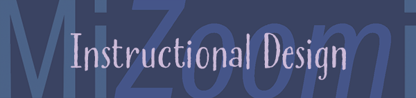

projects
Welcome to my projects page.
Please click directly on each image to see the full details of each project. I love designing and I hope you will be able to see that! Enjoy!
Project 1: "Sculpting the Face" Video Class
Sculpting a face can be a daunting challenge for anyone. But through the use of videos, digital images and audio, I will lead the student through the process of selecting tools, becoming comfortable with the medium, to finally sculpting a face.
"Project 2: Instructional Design: How to Use Zoom"
Working with a team, we are constructing a training seminar that documents our procedure of Analysis, Designing, Development, Implementation and finally Evaluation. Our team name is MiZoomi.

"Project 3: Associate Teaching Director"
Part of my duties as Associate Teaching Director (ATD) of the Houston Fort Bend Country Community Bible Study Class are to conduct yearly training of small group leaders. There are guidelines provided for what should be trained each year, and I take those and then write the curriculum based on a needs assessment of our group, first starting with a theme.